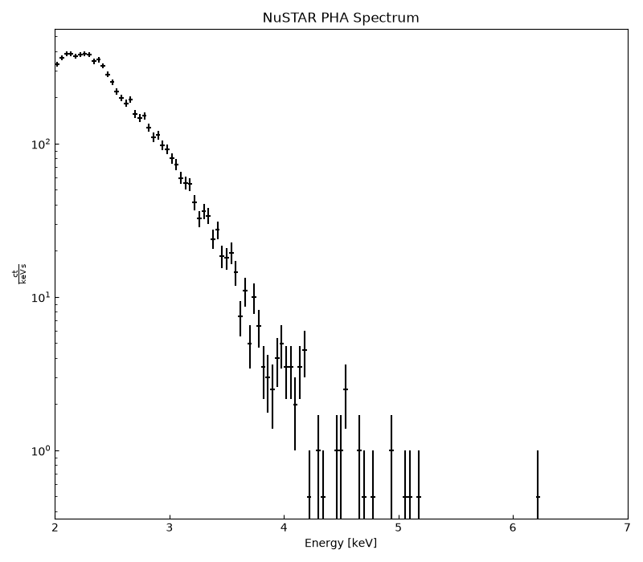
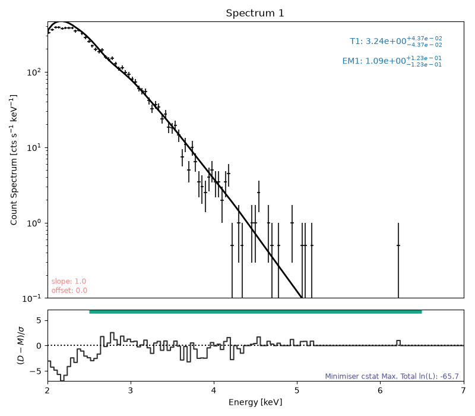
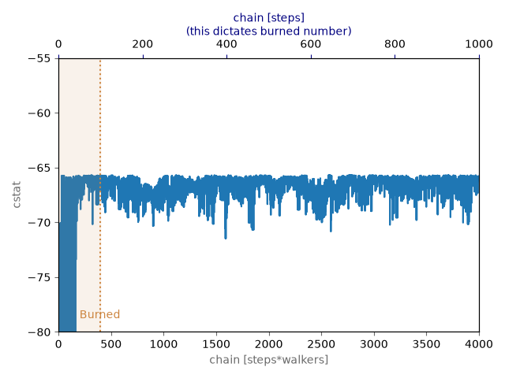
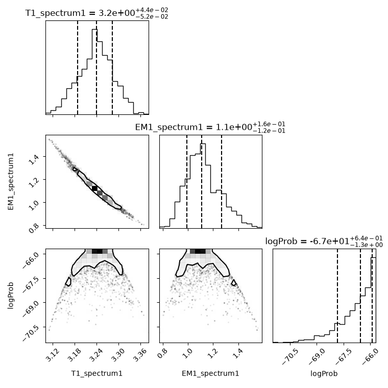
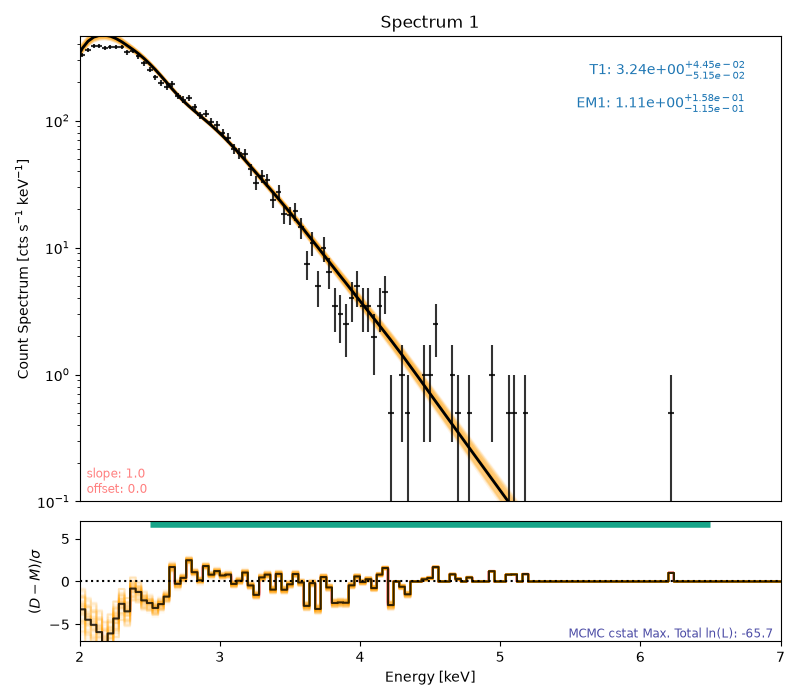

Note
Go to the end to download the full example code.
NuSTAR Spectral Fitting
This example shows the spectral fitting of NuSTAR data.
import ntpath
import os
import urllib.request
import matplotlib.pyplot as plt
import numpy as np
from jdhsrpy import TEST_DATA_LOCATION, spectral_fitting
from jdhsrpy.nustar_spectrum import nustar_pha_spectrum
from jdhsrpy.visualize import spectrum_plot
/home/runner/work/jdhsrpy/jdhsrpy/jdhsrpy/spectral_fitting.py:3: SunpyDeprecationWarning: The legacy module has been deprecated since version 0.4 and will be removed in a future version.
from sunkit_spex.legacy.fitting.fitter import Fitter
Files Downloaded: 0%| | 0/1 [00:00<?, ?file/s]
sunkit_spex.chianti_cont_1_250_v71.sav: 0%| | 0.00/9.88M [00:00<?, ?B/s]
sunkit_spex.chianti_cont_1_250_v71.sav: 2%|▏ | 197k/9.88M [00:00<00:04, 1.94MB/s]
sunkit_spex.chianti_cont_1_250_v71.sav: 25%|██▌ | 2.51M/9.88M [00:00<00:00, 14.4MB/s]
sunkit_spex.chianti_cont_1_250_v71.sav: 78%|███████▊ | 7.66M/9.88M [00:00<00:00, 31.2MB/s]
Files Downloaded: 100%|██████████| 1/1 [00:00<00:00, 1.68file/s]
Files Downloaded: 100%|██████████| 1/1 [00:00<00:00, 1.67file/s]
Files Downloaded: 0%| | 0/1 [00:00<?, ?file/s]
sunkit_spex.chianti_lines_1_10_v71.sav: 0%| | 0.00/23.6M [00:00<?, ?B/s]
sunkit_spex.chianti_lines_1_10_v71.sav: 1%| | 213k/23.6M [00:00<00:11, 2.08MB/s]
sunkit_spex.chianti_lines_1_10_v71.sav: 9%|▉ | 2.17M/23.6M [00:00<00:01, 12.3MB/s]
sunkit_spex.chianti_lines_1_10_v71.sav: 38%|███▊ | 9.03M/23.6M [00:00<00:00, 37.7MB/s]
sunkit_spex.chianti_lines_1_10_v71.sav: 69%|██████▉ | 16.4M/23.6M [00:00<00:00, 51.8MB/s]
Files Downloaded: 100%|██████████| 1/1 [00:00<00:00, 1.79file/s]
Files Downloaded: 100%|██████████| 1/1 [00:00<00:00, 1.78file/s]
Files Downloaded: 0%| | 0/1 [00:00<?, ?file/s]
sunkit_spex.xray_abun_file.genx: 0%| | 0.00/2.03k [00:00<?, ?B/s]
Files Downloaded: 100%|██████████| 1/1 [00:00<00:00, 6.07file/s]
Files Downloaded: 100%|██████████| 1/1 [00:00<00:00, 6.03file/s]
Download the spectral files.
url = f"{TEST_DATA_LOCATION}/test_nustar_data/nu20619003001A06_cl_grade0_sr.pha"
filename_pha = os.path.join(os.getcwd(), ntpath.split(url)[1])
if not os.path.isfile(filename_pha):
urllib.request.urlretrieve(url, filename_pha)
url = f"{TEST_DATA_LOCATION}/test_nustar_data/nu20619003001A06_cl_grade0_sr.arf"
filename_arf = os.path.join(os.getcwd(), ntpath.split(url)[1])
if not os.path.isfile(filename_arf):
urllib.request.urlretrieve(url, filename_arf)
url = f"{TEST_DATA_LOCATION}/test_nustar_data/nu20619003001A06_cl_grade0_sr.rmf"
filename_rmf = os.path.join(os.getcwd(), ntpath.split(url)[1])
if not os.path.isfile(filename_rmf):
urllib.request.urlretrieve(url, filename_rmf)
This example assumes the user has already obtained the PHA, ARF, and RMF files from the NuSTAR data analysis software. See the documentation for more details.
At any point below, a user can swap to only using Sunkit-spex if the helper functions are too cryptic or annoying.
Inspecting the spectrum
It is possible to inspect the spectrum before continuing with the fitting.
This allows a user to get an idea of things like fitting energy ranges and which models to use.
energy_bins, flux, flux_err = nustar_pha_spectrum(filename_pha)
plt.figure(figsize=(8, 7))
spectrum_plot(energy_bins, flux, flux_err)
plt.xlim([2, 7])
plt.title("NuSTAR PHA Spectrum")
plt.tight_layout()
plt.show()

Let’s make sure the same random processing occur each time this is run so we’ll set the random seed for Numpy
np.random.seed(42)
Setting up the fitting
We start by loading in the spectral files using sunkit-spex and
the helper functions in jdhsrpy.
This example only shows using one NuSTAR observation and only from
FPMA. To include more, it’s just as simple as passing more files in the
following (e.g. spectral_fitting.get_fitter_object(file1, file2, ...)).
fitter = spectral_fitting.get_fitter_object(filename_pha)
The above is the equivalent of the following when using Sunkit-spex directly.
from sunkit_spex.legacy.fitting.fitter import Fitter
equivalent_fitter = Fitter(
pha_file=[
filename_pha,
]
)
Choosing the fitting range
Choose a fitting range in keV.
The fitting range can be changed at any point. E.g., parameters can be freed or frozen, the fitting range can be changed, then the fit can be run again starting off from where it left off from the previous fit.
fitter.energy_fitting_range = [2.5, 6.5]
Choosing the model
There are a lot of models to choose from but let’s try a single thermal model.
These helper functions are useful as it will check if there are multiple spectra being fitted and then will include a constant factor automatically in the model if that’s the case.
spectral_fitting.set_single_thermal_model(fitter)
print(fitter.params)
Status Value Bounds Error
T1_spectrum1 free 1.0 (0.0, None) (0.0, 0.0)
EM1_spectrum1 free 1.0 (0.0, None) (0.0, 0.0)
Setting up the parameters
For the fitting to start off, we need to provide initial guesses and provide bounds for the fitting parameters.
fitter.params["T1_spectrum1"] = {"Value": 3, "Bounds": (1.1, 4)}
fitter.params["EM1_spectrum1"] = {"Value": 9e-1, "Bounds": (5e-1, 5e0)}
Fitting the data and plotting
The data can now be fitted and plotted.
fitter.fit()
# plot the result
plt.figure(figsize=(8, 7))
axes, res_axes = fitter.plot()
y_max_lim = 1.2 * np.max(fitter.data.loaded_spec_data["spectrum1"]["count_rate"])
axes[0].set_ylim([1e-1, y_max_lim])
axes[0].set_xlim([2, 7])
plt.tight_layout()
plt.show()

MCMC analysis
We can also easily run MCMC analysis.
mcmc_result = fitter.run_mcmc(steps_per_walker=1_000)
fitter.burn_mcmc = 100
0%| | 0/1000 [00:00<?, ?it/s]
0%| | 3/1000 [00:00<00:46, 21.35it/s]
1%| | 6/1000 [00:00<00:46, 21.43it/s]
1%| | 9/1000 [00:00<00:46, 21.13it/s]
1%| | 12/1000 [00:00<00:46, 21.07it/s]
2%|▏ | 15/1000 [00:00<00:46, 21.09it/s]
2%|▏ | 18/1000 [00:00<00:46, 21.18it/s]
2%|▏ | 21/1000 [00:00<00:46, 21.26it/s]
2%|▏ | 24/1000 [00:01<00:45, 21.31it/s]
3%|▎ | 27/1000 [00:01<00:45, 21.20it/s]
3%|▎ | 30/1000 [00:01<00:45, 21.29it/s]
3%|▎ | 33/1000 [00:01<00:45, 21.28it/s]
4%|▎ | 36/1000 [00:01<00:45, 21.24it/s]
4%|▍ | 39/1000 [00:01<00:45, 21.21it/s]
4%|▍ | 42/1000 [00:01<00:45, 21.25it/s]
4%|▍ | 45/1000 [00:02<00:45, 21.22it/s]
5%|▍ | 48/1000 [00:02<00:44, 21.19it/s]
5%|▌ | 51/1000 [00:02<00:44, 21.10it/s]
5%|▌ | 54/1000 [00:02<00:44, 21.10it/s]
6%|▌ | 57/1000 [00:02<00:44, 21.07it/s]
6%|▌ | 60/1000 [00:02<00:44, 21.05it/s]
6%|▋ | 63/1000 [00:02<00:44, 21.07it/s]
7%|▋ | 66/1000 [00:03<00:44, 21.05it/s]
7%|▋ | 69/1000 [00:03<00:44, 20.94it/s]
7%|▋ | 72/1000 [00:03<00:44, 20.98it/s]
8%|▊ | 75/1000 [00:03<00:43, 21.12it/s]
8%|▊ | 78/1000 [00:03<00:43, 21.17it/s]
8%|▊ | 81/1000 [00:03<00:43, 21.09it/s]
8%|▊ | 84/1000 [00:03<00:43, 21.03it/s]
9%|▊ | 87/1000 [00:04<00:43, 21.11it/s]
9%|▉ | 90/1000 [00:04<00:42, 21.22it/s]
9%|▉ | 93/1000 [00:04<00:42, 21.15it/s]
10%|▉ | 96/1000 [00:04<00:42, 21.12it/s]
10%|▉ | 99/1000 [00:04<00:42, 21.18it/s]
10%|█ | 102/1000 [00:04<00:42, 21.24it/s]
10%|█ | 105/1000 [00:04<00:42, 21.28it/s]
11%|█ | 108/1000 [00:05<00:41, 21.25it/s]
11%|█ | 111/1000 [00:05<00:41, 21.19it/s]
11%|█▏ | 114/1000 [00:05<00:41, 21.23it/s]
12%|█▏ | 117/1000 [00:05<00:41, 21.24it/s]
12%|█▏ | 120/1000 [00:05<00:41, 21.31it/s]
12%|█▏ | 123/1000 [00:05<00:41, 21.35it/s]
13%|█▎ | 126/1000 [00:05<00:40, 21.36it/s]
13%|█▎ | 129/1000 [00:06<00:40, 21.34it/s]
13%|█▎ | 132/1000 [00:06<00:40, 21.39it/s]
14%|█▎ | 135/1000 [00:06<00:40, 21.39it/s]
14%|█▍ | 138/1000 [00:06<00:40, 21.43it/s]
14%|█▍ | 141/1000 [00:06<00:40, 21.46it/s]
14%|█▍ | 144/1000 [00:06<00:39, 21.52it/s]
15%|█▍ | 147/1000 [00:06<00:39, 21.52it/s]
15%|█▌ | 150/1000 [00:07<00:39, 21.49it/s]
15%|█▌ | 153/1000 [00:07<00:39, 21.48it/s]
16%|█▌ | 156/1000 [00:07<00:39, 21.54it/s]
16%|█▌ | 159/1000 [00:07<00:39, 21.51it/s]
16%|█▌ | 162/1000 [00:07<00:39, 21.46it/s]
16%|█▋ | 165/1000 [00:07<00:38, 21.41it/s]
17%|█▋ | 168/1000 [00:07<00:39, 21.31it/s]
17%|█▋ | 171/1000 [00:08<00:38, 21.26it/s]
17%|█▋ | 174/1000 [00:08<00:38, 21.33it/s]
18%|█▊ | 177/1000 [00:08<00:38, 21.34it/s]
18%|█▊ | 180/1000 [00:08<00:38, 21.43it/s]
18%|█▊ | 183/1000 [00:08<00:38, 21.42it/s]
19%|█▊ | 186/1000 [00:08<00:38, 21.41it/s]
19%|█▉ | 189/1000 [00:08<00:37, 21.43it/s]
19%|█▉ | 192/1000 [00:09<00:37, 21.40it/s]
20%|█▉ | 195/1000 [00:09<00:37, 21.43it/s]
20%|█▉ | 198/1000 [00:09<00:37, 21.44it/s]
20%|██ | 201/1000 [00:09<00:37, 21.34it/s]
20%|██ | 204/1000 [00:09<00:37, 21.34it/s]
21%|██ | 207/1000 [00:09<00:36, 21.44it/s]
21%|██ | 210/1000 [00:09<00:36, 21.42it/s]
21%|██▏ | 213/1000 [00:10<00:36, 21.43it/s]
22%|██▏ | 216/1000 [00:10<00:36, 21.45it/s]
22%|██▏ | 219/1000 [00:10<00:36, 21.41it/s]
22%|██▏ | 222/1000 [00:10<00:36, 21.41it/s]
22%|██▎ | 225/1000 [00:10<00:36, 21.43it/s]
23%|██▎ | 228/1000 [00:10<00:35, 21.47it/s]
23%|██▎ | 231/1000 [00:10<00:35, 21.48it/s]
23%|██▎ | 234/1000 [00:10<00:35, 21.45it/s]
24%|██▎ | 237/1000 [00:11<00:35, 21.37it/s]
24%|██▍ | 240/1000 [00:11<00:35, 21.28it/s]
24%|██▍ | 243/1000 [00:11<00:35, 21.27it/s]
25%|██▍ | 246/1000 [00:11<00:35, 21.27it/s]
25%|██▍ | 249/1000 [00:11<00:35, 21.19it/s]
25%|██▌ | 252/1000 [00:11<00:35, 21.18it/s]
26%|██▌ | 255/1000 [00:11<00:35, 21.09it/s]
26%|██▌ | 258/1000 [00:12<00:35, 21.07it/s]
26%|██▌ | 261/1000 [00:12<00:35, 21.10it/s]
26%|██▋ | 264/1000 [00:12<00:34, 21.08it/s]
27%|██▋ | 267/1000 [00:12<00:34, 21.08it/s]
27%|██▋ | 270/1000 [00:12<00:34, 21.02it/s]
27%|██▋ | 273/1000 [00:12<00:34, 21.02it/s]
28%|██▊ | 276/1000 [00:12<00:34, 21.03it/s]
28%|██▊ | 279/1000 [00:13<00:34, 21.03it/s]
28%|██▊ | 282/1000 [00:13<00:34, 20.95it/s]
28%|██▊ | 285/1000 [00:13<00:34, 20.90it/s]
29%|██▉ | 288/1000 [00:13<00:34, 20.89it/s]
29%|██▉ | 291/1000 [00:13<00:33, 20.87it/s]
29%|██▉ | 294/1000 [00:13<00:33, 21.04it/s]
30%|██▉ | 297/1000 [00:13<00:33, 21.06it/s]
30%|███ | 300/1000 [00:14<00:33, 21.04it/s]
30%|███ | 303/1000 [00:14<00:32, 21.12it/s]
31%|███ | 306/1000 [00:14<00:32, 21.05it/s]
31%|███ | 309/1000 [00:14<00:32, 21.05it/s]
31%|███ | 312/1000 [00:14<00:32, 21.05it/s]
32%|███▏ | 315/1000 [00:14<00:32, 21.04it/s]
32%|███▏ | 318/1000 [00:14<00:32, 21.01it/s]
32%|███▏ | 321/1000 [00:15<00:32, 21.05it/s]
32%|███▏ | 324/1000 [00:15<00:32, 21.10it/s]
33%|███▎ | 327/1000 [00:15<00:31, 21.12it/s]
33%|███▎ | 330/1000 [00:15<00:31, 21.12it/s]
33%|███▎ | 333/1000 [00:15<00:31, 21.02it/s]
34%|███▎ | 336/1000 [00:15<00:31, 21.06it/s]
34%|███▍ | 339/1000 [00:15<00:31, 21.15it/s]
34%|███▍ | 342/1000 [00:16<00:31, 21.18it/s]
34%|███▍ | 345/1000 [00:16<00:30, 21.24it/s]
35%|███▍ | 348/1000 [00:16<00:30, 21.29it/s]
35%|███▌ | 351/1000 [00:16<00:30, 21.33it/s]
35%|███▌ | 354/1000 [00:16<00:30, 21.29it/s]
36%|███▌ | 357/1000 [00:16<00:30, 21.31it/s]
36%|███▌ | 360/1000 [00:16<00:30, 21.31it/s]
36%|███▋ | 363/1000 [00:17<00:29, 21.32it/s]
37%|███▋ | 366/1000 [00:17<00:29, 21.31it/s]
37%|███▋ | 369/1000 [00:17<00:29, 21.32it/s]
37%|███▋ | 372/1000 [00:17<00:29, 21.31it/s]
38%|███▊ | 375/1000 [00:17<00:29, 21.23it/s]
38%|███▊ | 378/1000 [00:17<00:29, 21.24it/s]
38%|███▊ | 381/1000 [00:17<00:29, 21.25it/s]
38%|███▊ | 384/1000 [00:18<00:28, 21.28it/s]
39%|███▊ | 387/1000 [00:18<00:29, 20.98it/s]
39%|███▉ | 390/1000 [00:18<00:29, 20.93it/s]
39%|███▉ | 393/1000 [00:18<00:28, 20.98it/s]
40%|███▉ | 396/1000 [00:18<00:28, 21.13it/s]
40%|███▉ | 399/1000 [00:18<00:28, 21.20it/s]
40%|████ | 402/1000 [00:18<00:28, 21.25it/s]
40%|████ | 405/1000 [00:19<00:28, 21.09it/s]
41%|████ | 408/1000 [00:19<00:28, 21.14it/s]
41%|████ | 411/1000 [00:19<00:27, 21.11it/s]
41%|████▏ | 414/1000 [00:19<00:27, 21.16it/s]
42%|████▏ | 417/1000 [00:19<00:27, 21.12it/s]
42%|████▏ | 420/1000 [00:19<00:27, 21.04it/s]
42%|████▏ | 423/1000 [00:19<00:27, 21.06it/s]
43%|████▎ | 426/1000 [00:20<00:27, 21.09it/s]
43%|████▎ | 429/1000 [00:20<00:26, 21.20it/s]
43%|████▎ | 432/1000 [00:20<00:26, 21.28it/s]
44%|████▎ | 435/1000 [00:20<00:26, 21.28it/s]
44%|████▍ | 438/1000 [00:20<00:26, 21.22it/s]
44%|████▍ | 441/1000 [00:20<00:26, 21.27it/s]
44%|████▍ | 444/1000 [00:20<00:26, 21.22it/s]
45%|████▍ | 447/1000 [00:21<00:26, 21.21it/s]
45%|████▌ | 450/1000 [00:21<00:25, 21.20it/s]
45%|████▌ | 453/1000 [00:21<00:25, 21.18it/s]
46%|████▌ | 456/1000 [00:21<00:25, 21.27it/s]
46%|████▌ | 459/1000 [00:21<00:25, 21.29it/s]
46%|████▌ | 462/1000 [00:21<00:25, 21.27it/s]
46%|████▋ | 465/1000 [00:21<00:24, 21.76it/s]
47%|████▋ | 468/1000 [00:22<00:24, 21.66it/s]
47%|████▋ | 471/1000 [00:22<00:24, 21.52it/s]
47%|████▋ | 474/1000 [00:22<00:24, 21.27it/s]
48%|████▊ | 477/1000 [00:22<00:24, 21.12it/s]
48%|████▊ | 480/1000 [00:22<00:24, 21.11it/s]
48%|████▊ | 483/1000 [00:22<00:24, 21.17it/s]
49%|████▊ | 486/1000 [00:22<00:24, 21.21it/s]
49%|████▉ | 489/1000 [00:23<00:24, 21.23it/s]
49%|████▉ | 492/1000 [00:23<00:23, 21.27it/s]
50%|████▉ | 495/1000 [00:23<00:23, 21.30it/s]
50%|████▉ | 498/1000 [00:23<00:23, 21.33it/s]
50%|█████ | 501/1000 [00:23<00:23, 21.25it/s]
50%|█████ | 504/1000 [00:23<00:23, 21.26it/s]
51%|█████ | 507/1000 [00:23<00:23, 21.13it/s]
51%|█████ | 510/1000 [00:24<00:23, 21.06it/s]
51%|█████▏ | 513/1000 [00:24<00:23, 21.05it/s]
52%|█████▏ | 516/1000 [00:24<00:22, 21.07it/s]
52%|█████▏ | 519/1000 [00:24<00:22, 21.07it/s]
52%|█████▏ | 522/1000 [00:24<00:22, 21.03it/s]
52%|█████▎ | 525/1000 [00:24<00:22, 20.96it/s]
53%|█████▎ | 528/1000 [00:24<00:22, 20.76it/s]
53%|█████▎ | 531/1000 [00:25<00:22, 20.64it/s]
53%|█████▎ | 534/1000 [00:25<00:22, 20.54it/s]
54%|█████▎ | 537/1000 [00:25<00:22, 20.50it/s]
54%|█████▍ | 540/1000 [00:25<00:22, 20.47it/s]
54%|█████▍ | 543/1000 [00:25<00:22, 20.56it/s]
55%|█████▍ | 546/1000 [00:25<00:22, 20.60it/s]
55%|█████▍ | 549/1000 [00:25<00:22, 20.29it/s]
55%|█████▌ | 552/1000 [00:26<00:22, 20.11it/s]
56%|█████▌ | 555/1000 [00:26<00:21, 20.29it/s]
56%|█████▌ | 558/1000 [00:26<00:21, 20.48it/s]
56%|█████▌ | 561/1000 [00:26<00:21, 20.66it/s]
56%|█████▋ | 564/1000 [00:26<00:20, 20.84it/s]
57%|█████▋ | 567/1000 [00:26<00:20, 21.03it/s]
57%|█████▋ | 570/1000 [00:26<00:20, 21.11it/s]
57%|█████▋ | 573/1000 [00:27<00:20, 21.13it/s]
58%|█████▊ | 576/1000 [00:27<00:20, 21.17it/s]
58%|█████▊ | 579/1000 [00:27<00:19, 21.24it/s]
58%|█████▊ | 582/1000 [00:27<00:19, 21.22it/s]
58%|█████▊ | 585/1000 [00:27<00:19, 21.26it/s]
59%|█████▉ | 588/1000 [00:27<00:19, 21.18it/s]
59%|█████▉ | 591/1000 [00:27<00:19, 21.13it/s]
59%|█████▉ | 594/1000 [00:28<00:19, 21.18it/s]
60%|█████▉ | 597/1000 [00:28<00:19, 21.16it/s]
60%|██████ | 600/1000 [00:28<00:18, 21.13it/s]
60%|██████ | 603/1000 [00:28<00:18, 21.18it/s]
61%|██████ | 606/1000 [00:28<00:18, 21.19it/s]
61%|██████ | 609/1000 [00:28<00:18, 21.18it/s]
61%|██████ | 612/1000 [00:28<00:18, 21.18it/s]
62%|██████▏ | 615/1000 [00:29<00:18, 21.22it/s]
62%|██████▏ | 618/1000 [00:29<00:18, 21.22it/s]
62%|██████▏ | 621/1000 [00:29<00:17, 21.22it/s]
62%|██████▏ | 624/1000 [00:29<00:17, 21.26it/s]
63%|██████▎ | 627/1000 [00:29<00:17, 21.27it/s]
63%|██████▎ | 630/1000 [00:29<00:17, 21.31it/s]
63%|██████▎ | 633/1000 [00:29<00:17, 21.31it/s]
64%|██████▎ | 636/1000 [00:30<00:17, 21.27it/s]
64%|██████▍ | 639/1000 [00:30<00:16, 21.28it/s]
64%|██████▍ | 642/1000 [00:30<00:16, 21.32it/s]
64%|██████▍ | 645/1000 [00:30<00:16, 21.30it/s]
65%|██████▍ | 648/1000 [00:30<00:16, 21.35it/s]
65%|██████▌ | 651/1000 [00:30<00:16, 21.25it/s]
65%|██████▌ | 654/1000 [00:30<00:16, 21.19it/s]
66%|██████▌ | 657/1000 [00:31<00:16, 21.21it/s]
66%|██████▌ | 660/1000 [00:31<00:16, 21.20it/s]
66%|██████▋ | 663/1000 [00:31<00:15, 21.08it/s]
67%|██████▋ | 666/1000 [00:31<00:15, 21.13it/s]
67%|██████▋ | 669/1000 [00:31<00:15, 21.14it/s]
67%|██████▋ | 672/1000 [00:31<00:15, 21.16it/s]
68%|██████▊ | 675/1000 [00:31<00:15, 21.16it/s]
68%|██████▊ | 678/1000 [00:32<00:15, 21.17it/s]
68%|██████▊ | 681/1000 [00:32<00:15, 21.17it/s]
68%|██████▊ | 684/1000 [00:32<00:14, 21.16it/s]
69%|██████▊ | 687/1000 [00:32<00:14, 21.16it/s]
69%|██████▉ | 690/1000 [00:32<00:14, 21.11it/s]
69%|██████▉ | 693/1000 [00:32<00:14, 21.13it/s]
70%|██████▉ | 696/1000 [00:32<00:14, 21.09it/s]
70%|██████▉ | 699/1000 [00:33<00:14, 21.11it/s]
70%|███████ | 702/1000 [00:33<00:14, 21.12it/s]
70%|███████ | 705/1000 [00:33<00:13, 21.15it/s]
71%|███████ | 708/1000 [00:33<00:13, 21.10it/s]
71%|███████ | 711/1000 [00:33<00:13, 21.07it/s]
71%|███████▏ | 714/1000 [00:33<00:13, 21.12it/s]
72%|███████▏ | 717/1000 [00:33<00:13, 21.15it/s]
72%|███████▏ | 720/1000 [00:34<00:13, 21.05it/s]
72%|███████▏ | 723/1000 [00:34<00:13, 21.05it/s]
73%|███████▎ | 726/1000 [00:34<00:12, 21.14it/s]
73%|███████▎ | 729/1000 [00:34<00:12, 21.07it/s]
73%|███████▎ | 732/1000 [00:34<00:12, 21.11it/s]
74%|███████▎ | 735/1000 [00:34<00:12, 21.20it/s]
74%|███████▍ | 738/1000 [00:34<00:12, 21.24it/s]
74%|███████▍ | 741/1000 [00:35<00:12, 21.17it/s]
74%|███████▍ | 744/1000 [00:35<00:12, 21.19it/s]
75%|███████▍ | 747/1000 [00:35<00:11, 21.21it/s]
75%|███████▌ | 750/1000 [00:35<00:11, 21.11it/s]
75%|███████▌ | 753/1000 [00:35<00:11, 21.08it/s]
76%|███████▌ | 756/1000 [00:35<00:11, 21.05it/s]
76%|███████▌ | 759/1000 [00:35<00:11, 21.14it/s]
76%|███████▌ | 762/1000 [00:35<00:11, 21.14it/s]
76%|███████▋ | 765/1000 [00:36<00:11, 21.17it/s]
77%|███████▋ | 768/1000 [00:36<00:10, 21.21it/s]
77%|███████▋ | 771/1000 [00:36<00:10, 21.19it/s]
77%|███████▋ | 774/1000 [00:36<00:10, 21.11it/s]
78%|███████▊ | 777/1000 [00:36<00:10, 21.16it/s]
78%|███████▊ | 780/1000 [00:36<00:10, 21.21it/s]
78%|███████▊ | 783/1000 [00:36<00:10, 21.20it/s]
79%|███████▊ | 786/1000 [00:37<00:10, 21.19it/s]
79%|███████▉ | 789/1000 [00:37<00:09, 21.26it/s]
79%|███████▉ | 792/1000 [00:37<00:09, 21.30it/s]
80%|███████▉ | 795/1000 [00:37<00:09, 21.23it/s]
80%|███████▉ | 798/1000 [00:37<00:09, 21.22it/s]
80%|████████ | 801/1000 [00:37<00:09, 21.19it/s]
80%|████████ | 804/1000 [00:37<00:09, 21.10it/s]
81%|████████ | 807/1000 [00:38<00:09, 21.03it/s]
81%|████████ | 810/1000 [00:38<00:09, 21.08it/s]
81%|████████▏ | 813/1000 [00:38<00:08, 20.97it/s]
82%|████████▏ | 816/1000 [00:38<00:08, 20.95it/s]
82%|████████▏ | 819/1000 [00:38<00:08, 20.97it/s]
82%|████████▏ | 822/1000 [00:38<00:08, 21.03it/s]
82%|████████▎ | 825/1000 [00:38<00:08, 20.96it/s]
83%|████████▎ | 828/1000 [00:39<00:08, 20.96it/s]
83%|████████▎ | 831/1000 [00:39<00:08, 20.99it/s]
83%|████████▎ | 834/1000 [00:39<00:07, 21.12it/s]
84%|████████▎ | 837/1000 [00:39<00:07, 21.20it/s]
84%|████████▍ | 840/1000 [00:39<00:07, 21.23it/s]
84%|████████▍ | 843/1000 [00:39<00:07, 21.26it/s]
85%|████████▍ | 846/1000 [00:39<00:07, 21.23it/s]
85%|████████▍ | 849/1000 [00:40<00:07, 21.26it/s]
85%|████████▌ | 852/1000 [00:40<00:06, 21.29it/s]
86%|████████▌ | 855/1000 [00:40<00:06, 21.32it/s]
86%|████████▌ | 858/1000 [00:40<00:06, 21.34it/s]
86%|████████▌ | 861/1000 [00:40<00:06, 21.39it/s]
86%|████████▋ | 864/1000 [00:40<00:06, 21.36it/s]
87%|████████▋ | 867/1000 [00:40<00:06, 21.39it/s]
87%|████████▋ | 870/1000 [00:41<00:06, 21.40it/s]
87%|████████▋ | 873/1000 [00:41<00:05, 21.42it/s]
88%|████████▊ | 876/1000 [00:41<00:05, 21.36it/s]
88%|████████▊ | 879/1000 [00:41<00:05, 21.26it/s]
88%|████████▊ | 882/1000 [00:41<00:05, 21.24it/s]
88%|████████▊ | 885/1000 [00:41<00:05, 21.24it/s]
89%|████████▉ | 888/1000 [00:41<00:05, 21.10it/s]
89%|████████▉ | 891/1000 [00:42<00:05, 21.11it/s]
89%|████████▉ | 894/1000 [00:42<00:05, 21.13it/s]
90%|████████▉ | 897/1000 [00:42<00:04, 21.08it/s]
90%|█████████ | 900/1000 [00:42<00:04, 21.14it/s]
90%|█████████ | 903/1000 [00:42<00:04, 21.16it/s]
91%|█████████ | 906/1000 [00:42<00:04, 21.12it/s]
91%|█████████ | 909/1000 [00:42<00:04, 21.13it/s]
91%|█████████ | 912/1000 [00:43<00:04, 21.04it/s]
92%|█████████▏| 915/1000 [00:43<00:04, 21.08it/s]
92%|█████████▏| 918/1000 [00:43<00:03, 21.13it/s]
92%|█████████▏| 921/1000 [00:43<00:03, 21.16it/s]
92%|█████████▏| 924/1000 [00:43<00:03, 21.13it/s]
93%|█████████▎| 927/1000 [00:43<00:03, 20.97it/s]
93%|█████████▎| 930/1000 [00:43<00:03, 20.93it/s]
93%|█████████▎| 933/1000 [00:44<00:03, 20.91it/s]
94%|█████████▎| 936/1000 [00:44<00:03, 20.91it/s]
94%|█████████▍| 939/1000 [00:44<00:02, 20.93it/s]
94%|█████████▍| 942/1000 [00:44<00:02, 20.96it/s]
94%|█████████▍| 945/1000 [00:44<00:02, 20.98it/s]
95%|█████████▍| 948/1000 [00:44<00:02, 21.03it/s]
95%|█████████▌| 951/1000 [00:44<00:02, 21.10it/s]
95%|█████████▌| 954/1000 [00:45<00:02, 21.09it/s]
96%|█████████▌| 957/1000 [00:45<00:02, 21.17it/s]
96%|█████████▌| 960/1000 [00:45<00:01, 21.18it/s]
96%|█████████▋| 963/1000 [00:45<00:01, 21.23it/s]
97%|█████████▋| 966/1000 [00:45<00:01, 21.23it/s]
97%|█████████▋| 969/1000 [00:45<00:01, 21.33it/s]
97%|█████████▋| 972/1000 [00:45<00:01, 21.45it/s]
98%|█████████▊| 975/1000 [00:46<00:01, 21.46it/s]
98%|█████████▊| 978/1000 [00:46<00:01, 21.46it/s]
98%|█████████▊| 981/1000 [00:46<00:00, 21.33it/s]
98%|█████████▊| 984/1000 [00:46<00:00, 21.29it/s]
99%|█████████▊| 987/1000 [00:46<00:00, 21.26it/s]
99%|█████████▉| 990/1000 [00:46<00:00, 21.24it/s]
99%|█████████▉| 993/1000 [00:46<00:00, 21.22it/s]
100%|█████████▉| 996/1000 [00:47<00:00, 21.19it/s]
100%|█████████▉| 999/1000 [00:47<00:00, 21.16it/s]
100%|██████████| 1000/1000 [00:47<00:00, 21.17it/s]
We can see the log-probability chain of the walkers.
plt.figure()
fitter.plot_log_prob_chain()
plt.ylim([-80, -55])
plt.tight_layout()
plt.show()

The corner plot of the walkers.
corner_plot = fitter.corner_mcmc()
plt.tight_layout()
plt.show()

And, of course, the final fitted result.
# plot the result
plt.figure(figsize=(8, 7))
axes, res_axes = fitter.plot()
y_max_lim = 1.2 * np.max(fitter.data.loaded_spec_data["spectrum1"]["count_rate"])
axes[0].set_ylim([1e-1, y_max_lim])
axes[0].set_xlim([2, 7])
plt.tight_layout()
plt.show()

Total running time of the script: (1 minutes 2.717 seconds)